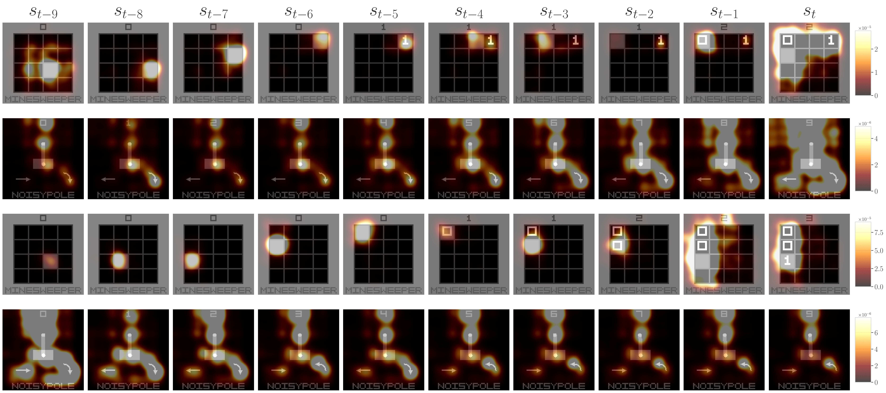
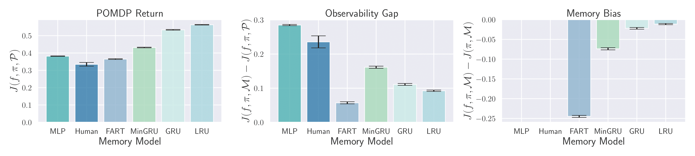

How should we analyze memory in deep RL? We introduce mathematical tools for fairly analyzing policies under partial observability and revealing how agents use memory to make decisions. To utilize these tools, we present POPGym Arcade, a collection of Atari-inspired, hardware-accelerated, pixel-based environments sharing a single observation and action space. Each environment provides fully and partially observable variants, enabling counterfactual studies on observability. We find that controlled studies are necessary for fair comparisons, and identify a pathology where value functions smear credit over irrelevant history. With this pathology, we demonstrate how out-of-distribution scenarios can contaminate memory, perturbing the policy far into the future, with implications for sim-to-real transfer and offline RL.

How do trained agents use memory? We plot pixelwise memory gradients for the LRU (top rows) and GRU (bottom rows), denoting how much each pixel contributes to future value estimate $V(s_t)$ through memory. In these MDPs, $V_*(s_{t})$ is independent of $s_{t-k} \dots s_{t-1}$, yet memory incorrectly smears value credit over uninformative past states, even with a residual connection bypassing the memory model. Smeared value attribution suggests value estimators may not generalize to new trajectories.

We disentangle the return using our memory analysis tools. We plot the POMDP returns $\in [0, 1]$, the Observability Gap, and Memory Bias. We aggregate scores over all environments and difficulty configurations. Whiskers represent the 95% confidence interval over five seeds.